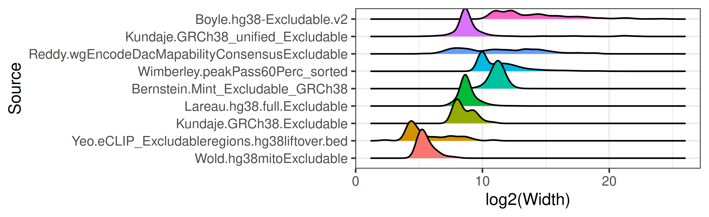
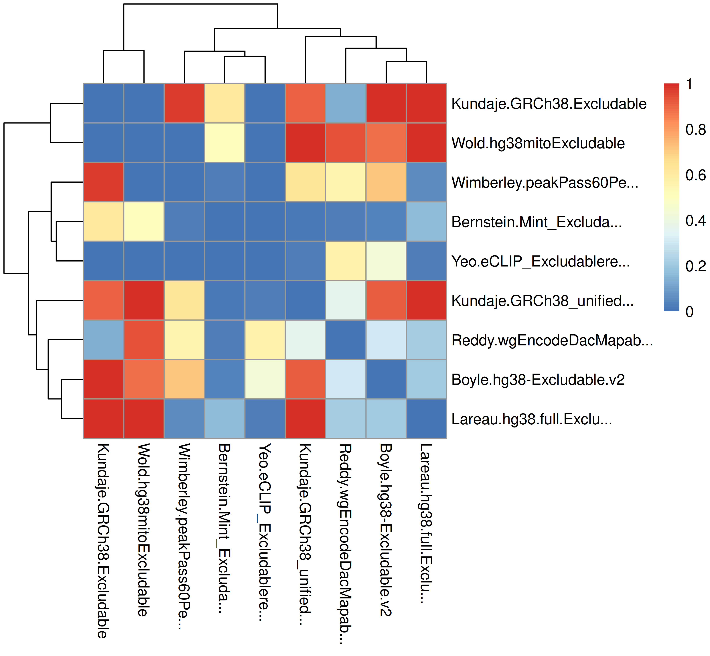

- excluderanges, genomic ranges of problematic genomic regions
- Use excluderanges
- BEDbase data download
- Mitochondrial DNA sequences, NUMTs
- Centromeres, telomeres, etc.
- CUT&RUN excludable sets
- Summary table
- Citation
- Code of Conduct
- References
Coordinates of problematic genomic regions that should be avoided when working with genomic data. For human, mouse, and selected model organisms. Package on Bioconductor: excluderanges.
New (2022-09-20) - Exclusion sets for human T2T-CHM13 and mouse GRCm39/mm39 genome assemblies are available. Download all data from Google Drive.
TL;DR - For human hg38 genome assembly, Anshul and we recommend ENCFF356LFX exclusion list regions. Also available as hg38.Kundaje.GRCh38_unified_Excludable excluderanges object (AnnotationHub ID: AH95917) and BEDbase.org.
BED files of exclusion regions are available on the ENCODE project website and scattered across various websites, such as Blacklist (Amemiya, Kundaje, and Boyle 2019), Peakpass (Wimberley and Heber 2019), Greenscreen (Klasfeld and Wagner 2022). Human and mouse genome assemblies have the largest number of exclusion sets generated by multiple labs. These exclusion sets frequently lack annotation and curation methods, creating uncertainty what to use. The purpose of this package is to provide a unified place for informed retrieval of exclusion regions.
Naming convention: <genome assembly>.<lab>.<original file name>, e.g., hg19.Birney.wgEncodeDacMapabilityConsensusExcludable.
See make-data.R how we created excluderanges objects.
Installation instructions
Install the latest release of R, then get the latest version of Bioconductor by starting R and entering the commands:
# if (!require("BiocManager", quietly = TRUE))
# install.packages("BiocManager")
# BiocManager::install(version = "3.16")Then, install additional packages using the following code:
# BiocManager::install("AnnotationHub", update = FALSE)
# BiocManager::install("GenomicRanges", update = FALSE)
# BiocManager::install("plyranges", update = FALSE)Use excluderanges
Get an overview of what’s available
suppressMessages(library(GenomicRanges))
suppressMessages(library(AnnotationHub))
ah <- AnnotationHub()
#> snapshotDate(): 2022-10-26
query_data <- subset(ah, preparerclass == "excluderanges")
# You can search for multiple terms
# query_data <- query(ah, c("excluderanges", "Kundaje", "hg38"))
query_data
#> AnnotationHub with 82 records
#> # snapshotDate(): 2022-10-26
#> # $dataprovider: UCSC, GitHub, ENCODE, UCSChub, excluderanges, Stanford.edu,...
#> # $species: Homo sapiens, Mus musculus, Drosophila melanogaster, Danio rerio...
#> # $rdataclass: GRanges
#> # additional mcols(): taxonomyid, genome, description,
#> # coordinate_1_based, maintainer, rdatadateadded, preparerclass, tags,
#> # rdatapath, sourceurl, sourcetype
#> # retrieve records with, e.g., 'object[["AH107304"]]'
#>
#> title
#> AH107304 | T2T.excluderanges
#> AH107305 | hg38.Kundaje.GRCh38_unified_Excludable
#> AH107306 | hg38.Bernstein.Mint_Excludable_GRCh38
#> AH107307 | hg38.Boyle.hg38-Excludable.v2
#> AH107308 | hg38.Kundaje.GRCh38.Excludable
#> ... ...
#> AH107381 | danRer10.UCSC.scaffold
#> AH107382 | dm6.UCSC.other
#> AH107383 | dm3.UCSC.contig
#> AH107384 | dm3.UCSC.scaffold
#> AH107385 | TAIR10.UCSC.araTha1.gaphg38.Kundaje.GRCh38_unified_Excludable object recommended by Anshul
excludeGR.hg38.Kundaje.1 <- query_data[["AH107305"]]
#> loading from cache
# Always a good idea to sort GRanges and keep standard chromosomes
excludeGR.hg38.Kundaje.1 <- excludeGR.hg38.Kundaje.1 %>%
sort() %>% keepStandardChromosomes(pruning.mode = "tidy")
excludeGR.hg38.Kundaje.1
#> GRanges object with 910 ranges and 0 metadata columns:
#> seqnames ranges strand
#> <Rle> <IRanges> <Rle>
#> [1] chr1 628903-635104 *
#> [2] chr1 5850087-5850571 *
#> [3] chr1 8909610-8910014 *
#> [4] chr1 9574580-9574997 *
#> [5] chr1 32043823-32044203 *
#> ... ... ... ...
#> [906] chrY 11290797-11334278 *
#> [907] chrY 11493053-11592850 *
#> [908] chrY 11671014-11671046 *
#> [909] chrY 11721528-11749472 *
#> [910] chrY 56694632-56889743 *
#> -------
#> seqinfo: 24 sequences from hg38 genomeSave the data in a BED file, if needed.
# Note that rtracklayer::import and rtracklayer::export perform unexplained
# start coordinate conversion, likely related to 0- and 1-based coordinate
# system. We recommend converting GRanges to a data frame and save tab-separated
write.table(as.data.frame(excludeGR.hg38.Kundaje.1),
file = "hg38.Kundaje.GRCh38_unified_Excludable.bed",
sep = "\t", row.names = FALSE, col.names = FALSE, quote = FALSE)We can load other excludable regions for the hg38 genome assembly and compare them.
query_data <- query(ah, c("excluderanges", "hg38"))
query_data
#> AnnotationHub with 17 records
#> # snapshotDate(): 2022-10-26
#> # $dataprovider: UCSC, ENCODE, GitHub, UCSChub
#> # $species: Homo sapiens
#> # $rdataclass: GRanges
#> # additional mcols(): taxonomyid, genome, description,
#> # coordinate_1_based, maintainer, rdatadateadded, preparerclass, tags,
#> # rdatapath, sourceurl, sourcetype
#> # retrieve records with, e.g., 'object[["AH107305"]]'
#>
#> title
#> AH107305 | hg38.Kundaje.GRCh38_unified_Excludable
#> AH107306 | hg38.Bernstein.Mint_Excludable_GRCh38
#> AH107307 | hg38.Boyle.hg38-Excludable.v2
#> AH107308 | hg38.Kundaje.GRCh38.Excludable
#> AH107309 | hg38.Lareau.hg38.full.Excludable
#> ... ...
#> AH107355 | hg38.UCSC.telomere
#> AH107356 | hg38.UCSC.short_arm
#> AH107357 | hg38.UCSC.heterochromatin
#> AH107358 | hg38.UCSC.contig
#> AH107359 | hg38.UCSC.scaffold
excludeGR.hg38.Bernstein <- query_data[["AH107306"]]
#> loading from cache
excludeGR.hg38.Boyle <- query_data[["AH107307"]]
#> loading from cache
excludeGR.hg38.Kundaje.2 <- query_data[["AH107308"]]
#> loading from cache
excludeGR.hg38.Lareau <- query_data[["AH107309"]]
#> loading from cache
excludeGR.hg38.Reddy <- query_data[["AH107310"]]
#> loading from cache
excludeGR.hg38.Wimberley <- query_data[["AH107311"]]
#> loading from cache
excludeGR.hg38.Wold <- query_data[["AH107312"]]
#> loading from cache
excludeGR.hg38.Yeo <- query_data[["AH107313"]]
#> loading from cacheCompare the number of excludable regions
library(ggplot2)
mtx_to_plot <- data.frame(Count = c(length(excludeGR.hg38.Bernstein),
length(excludeGR.hg38.Boyle),
length(excludeGR.hg38.Kundaje.1),
length(excludeGR.hg38.Kundaje.2),
length(excludeGR.hg38.Lareau),
length(excludeGR.hg38.Reddy),
length(excludeGR.hg38.Wimberley),
length(excludeGR.hg38.Wold),
length(excludeGR.hg38.Yeo)),
Source = c("Bernstein.Mint_Excludable_GRCh38",
"Boyle.hg38-Excludable.v2",
"Kundaje.GRCh38_unified_Excludable",
"Kundaje.GRCh38.Excludable",
"Lareau.hg38.full.Excludable",
"Reddy.wgEncodeDacMapabilityConsensusExcludable",
"Wimberley.peakPass60Perc_sorted",
"Wold.hg38mitoExcludable",
"Yeo.eCLIP_Excludableregions.hg38liftover.bed"))
# Order Source by the number of regions
mtx_to_plot$Source <- factor(mtx_to_plot$Source, levels = mtx_to_plot$Source[order(mtx_to_plot$Count)])
ggplot(mtx_to_plot, aes(x = Source, y = Count, fill = Source)) +
geom_bar(stat = "identity") +
coord_flip() +
theme_bw() + theme(legend.position = "none")
# ggsave("man/figures/excluderanges_hg38_count.png", width = 5.5, height = 2)Compare the width of excludable regions
log2 scale because of heavy right tail distributions.
library(ggridges)
library(dplyr)
mtx_to_plot <- data.frame(Width = c(width(excludeGR.hg38.Bernstein),
width(excludeGR.hg38.Boyle),
width(excludeGR.hg38.Kundaje.1),
width(excludeGR.hg38.Kundaje.2),
width(excludeGR.hg38.Lareau),
width(excludeGR.hg38.Reddy),
width(excludeGR.hg38.Wimberley),
width(excludeGR.hg38.Wold),
width(excludeGR.hg38.Yeo)),
Source = c(rep("Bernstein.Mint_Excludable_GRCh38", length(excludeGR.hg38.Bernstein)),
rep("Boyle.hg38-Excludable.v2", length(excludeGR.hg38.Boyle)),
rep("Kundaje.GRCh38_unified_Excludable", length(excludeGR.hg38.Kundaje.1)),
rep("Kundaje.GRCh38.Excludable", length(excludeGR.hg38.Kundaje.2)),
rep("Lareau.hg38.full.Excludable", length(excludeGR.hg38.Lareau)),
rep("Reddy.wgEncodeDacMapabilityConsensusExcludable", length(excludeGR.hg38.Reddy)),
rep("Wimberley.peakPass60Perc_sorted", length(excludeGR.hg38.Wimberley)),
rep("Wold.hg38mitoExcludable", length(excludeGR.hg38.Wold)),
rep("Yeo.eCLIP_Excludableregions.hg38liftover.bed", length(excludeGR.hg38.Yeo))))
# Order objects by decreasing width
mtx_to_plot$Source <- factor(mtx_to_plot$Source, levels = mtx_to_plot %>%
group_by(Source) %>% summarise(Mean = mean(Width)) %>%
arrange(Mean) %>% pull(Source))
ggplot(mtx_to_plot, aes(x = log2(Width), y = Source, fill = Source)) +
geom_density_ridges() +
theme_bw() + theme(legend.position = "none")
# ggsave("man/figures/excluderanges_hg38_width.png", width = 5.5, height = 2)We can investigate the total width of each set of excludable ranges.
mtx_to_plot <- data.frame(TotalWidth = c(sum(width(excludeGR.hg38.Bernstein)),
sum(width(excludeGR.hg38.Boyle)),
sum(width(excludeGR.hg38.Kundaje.1)),
sum(width(excludeGR.hg38.Kundaje.2)),
sum(width(excludeGR.hg38.Lareau)),
sum(width(excludeGR.hg38.Reddy)),
sum(width(excludeGR.hg38.Wimberley)),
sum(width(excludeGR.hg38.Wold)),
sum(width(excludeGR.hg38.Yeo))),
Source = c("Bernstein.Mint_Excludable_GRCh38",
"Boyle.hg38-Excludable.v2",
"Kundaje.GRCh38_unified_Excludable",
"Kundaje.GRCh38.Excludable",
"Lareau.hg38.full.Excludable",
"Reddy.wgEncodeDacMapabilityConsensusExcludable",
"Wimberley.peakPass60Perc_sorted",
"Wold.hg38mitoExcludable",
"Yeo.eCLIP_Excludableregions.hg38liftover.bed"))
# Order objects by decreasing width
mtx_to_plot$Source <- factor(mtx_to_plot$Source, levels = mtx_to_plot %>%
group_by(Source) %>% arrange(TotalWidth) %>% pull(Source))
ggplot(mtx_to_plot, aes(x = TotalWidth, y = Source, fill = Source)) +
geom_bar(stat="identity") + scale_x_log10() + scale_y_discrete(label=abbreviate, limits=rev) +
xlab("log10 total width")
# ggsave("man/figures/excluderanges_hg38_sumwidth.png", width = 6.5, height = 2)Compare overlaps among sets
We can compare overlap coefficients between those sets of excludable regions.
library(pheatmap)
library(stringr)
# Overlap coefficient calculations
overlap_coefficient <- function(gr_a, gr_b) {
intersects <- GenomicRanges::intersect(gr_a, gr_b, ignore.strand = TRUE)
intersection_width <- sum(width(intersects))
min_width <- min(sum(width(gr_a)), sum(width(gr_b)))
DataFrame(intersection_width, min_width,
overlap_coefficient = intersection_width/min_width,
n_intersections = length(intersects))
}
# List and names of all excludable regions
all_excludeGR_list <- list(excludeGR.hg38.Bernstein,
excludeGR.hg38.Boyle,
excludeGR.hg38.Kundaje.1,
excludeGR.hg38.Kundaje.2,
excludeGR.hg38.Lareau,
excludeGR.hg38.Reddy,
excludeGR.hg38.Wimberley,
excludeGR.hg38.Wold,
excludeGR.hg38.Yeo)
all_excludeGR_name <- c("Bernstein.Mint_Excludable_GRCh38",
"Boyle.hg38-Excludable.v2",
"Kundaje.GRCh38_unified_Excludable",
"Kundaje.GRCh38.Excludable",
"Lareau.hg38.full.Excludable",
"Reddy.wgEncodeDacMapabilityConsensusExcludable",
"Wimberley.peakPass60Perc_sorted",
"Wold.hg38mitoExcludable",
"Yeo.eCLIP_Excludableregions.hg38liftover.bed")
# Correlation matrix, empty
mtx_to_plot <- matrix(data = 0, nrow = length(all_excludeGR_list), ncol = length(all_excludeGR_list))
# Fill it in
for (i in 1:length(all_excludeGR_list)) {
for (j in 1:length(all_excludeGR_list)) {
# If diagonal, set to zero
if (i == j) mtx_to_plot[i, j] <- 0
# Process only one half, the other is symmetric
if (i > j) {
mtx_to_plot[i, j] <- mtx_to_plot[j, i] <- overlap_coefficient(all_excludeGR_list[[i]], all_excludeGR_list[[j]])[["overlap_coefficient"]]
}
}
}
# Trim row/colnames
rownames(mtx_to_plot) <- colnames(mtx_to_plot) <- str_trunc(all_excludeGR_name, width = 25)
# Save the plot
# png("man/figures/excluderanges_hg38_jaccard.png", width = 1000, height = 900, res = 200)
pheatmap(data.matrix(mtx_to_plot), clustering_method = "ward.D")
# dev.off()Metadata analysis
Note that some excludable ranges objects contain six columns, implying there may be some interesting metadata. Let’s explore one.
mcols(excludeGR.hg38.Reddy)
#> DataFrame with 396 rows and 2 columns
#> name score
#> <character> <numeric>
#> 1 High_Mappability_isl.. 1000
#> 2 Satellite_repeat 1000
#> 3 BSR/Beta 1000
#> 4 Low_mappability_island 1000
#> 5 (CATTC)n 1000
#> ... ... ...
#> 392 Satellite_repeat 1000
#> 393 (CATTC)n 1000
#> 394 (CATTC)n 1000
#> 395 TAR1 1000
#> 396 chrM 1000
mtx_to_plot <- table(mcols(excludeGR.hg38.Reddy)[["name"]]) %>%
as.data.frame()
colnames(mtx_to_plot) <- c("Type", "Number")
mtx_to_plot <- mtx_to_plot[order(mtx_to_plot$Number), ]
mtx_to_plot$Type <- factor(mtx_to_plot$Type,
levels = mtx_to_plot$Type)
ggplot(mtx_to_plot, aes(x = Number, y = Type, fill = Type)) +
geom_bar(stat="identity") +
theme_bw() + theme(legend.position = "none")
# ggsave("man/figures/excluderanges_hg38_Reddy_metadata.png", width = 5, height = 2.5)One may decide to combine the excludable ranges from all labs, although from previous results we may decide to follow Anshul’s advice about the ENCFF356LFX exclusion list regions and use the excludeGR.hg38.Kundaje.1 object.
excludeGR.hg38.all <- reduce(c(excludeGR.hg38.Bernstein,
excludeGR.hg38.Boyle,
excludeGR.hg38.Kundaje.1,
excludeGR.hg38.Kundaje.2,
excludeGR.hg38.Lareau,
excludeGR.hg38.Reddy,
excludeGR.hg38.Wimberley,
excludeGR.hg38.Wold,
excludeGR.hg38.Yeo))
# Sort and Keep only standard chromosomes
excludeGR.hg38.all <- excludeGR.hg38.all %>% sort %>%
keepStandardChromosomes(pruning.mode = "tidy")
print(length(excludeGR.hg38.all))
#> [1] 15998
summary(width(excludeGR.hg38.all))
#> Min. 1st Qu. Median Mean 3rd Qu. Max.
#> 5 1703 2294 17713 3001 30739401BEDbase data download
BEDbase.org is a repository for storing and analyzing BED files and BED sets, developed by Sheffield lab. It provides API for data access and retrieval.
Using BEDbase ID (e.g., 1a561729234c2844303a051b16f66656 for the hg38.Kundaje.GRCh38_unified_Excludable excluderanges object), we can construct a URL showing the splash screen with detailed information of the corresponding object, http://bedbase.org/#/bedsplash/1a561729234c2844303a051b16f66656.
We can also get the BED file using the BEDbase API.
wget http://bedbase.org/api/bed/1a561729234c2844303a051b16f66656/file/bed \
-O hg38.Kundaje.GRCh38_unified_Excludable.bed.gz See also the R code to download T2T.excluderanges and mm39.excluderanges.
Mitochondrial DNA sequences, NUMTs
Mitochondrial DNA sequences (mtDNA, 100-600K mitochondria per human cell) transferred to the nucleus give rise to the so-called mitochondrial DNA sequences in the nuclear genome (NUMTs). In the settings of DNA/chromatin sequencing (e.g., ATAC-seq), we may observe up to 80% of mitochondrial sequencing reads that may pile up in the NUMT sequences. Similar to exclusion sets, genomic regions highly homologous to mtDNA can be masked to improve biological signal.
The reference human nuclear mitochondrial sequences have been available in the UCSC genome browser for hg19 and mm8 human/mouse genome assemblies. We collected NUMT sets for hg38, T2T-CHM13, mm10, generated by Caleb Lareau in the mitoblacklist GitHub repository. These NUMT sets can be combined with exclusion sets.
Example of the hg38.Lareau.hg38_peaks object
suppressMessages(library(httr))
# Get hg38.Lareau.hg38_peaks BEDbase ID
bedbase_id <- "9fa55701a3bd3e7a598d1d2815e3390f"
# Construct output file name
fileNameOut <- "hg38.Lareau.hg38_peak.bed.gz"
# API token for BED data
token2 <- paste0("http://bedbase.org/api/bed/", bedbase_id, "/file/bed")
# Download file
GET(url = token2, write_disk(fileNameOut, overwrite = TRUE)) # , verbose()
#> Response [http://data.bedbase.org/bed_files/hg38.Lareau.hg38_peaks.bed.gz]
#> Date: 2022-11-21 00:34
#> Status: 200
#> Content-Type: application/vnd.realvnc.bed
#> Size: 11.8 kB
#> <ON DISK> /Users/mdozmorov/Documents/Work/GitHub/excluderanges/hg38.Lareau.hg38_peak.bed.gz
# Read the data in
hg38.Lareau.hg38_peaks <- read.table(fileNameOut, sep = "\t", header = FALSE)
# Assign column names depending on the number of columns
all_columns <- c("chr", "start", "stop", "name", "score", "strand",
"signalValue", "pValue", "qValue", "peak")
colnames(hg38.Lareau.hg38_peaks) <- all_columns[1:ncol(hg38.Lareau.hg38_peaks)]
# Convert to GRanges object
hg38.Lareau.hg38_peaks <- makeGRangesFromDataFrame(hg38.Lareau.hg38_peaks,
keep.extra.columns = TRUE)
hg38.Lareau.hg38_peaks
#> GRanges object with 784 ranges and 2 metadata columns:
#> seqnames ranges strand | name score
#> <Rle> <IRanges> <Rle> | <character> <integer>
#> [1] chr1 628903-635104 * | peaks/hg38_peak_1 2523899
#> [2] chr1 5850087-5850571 * | peaks/hg38_peak_2 32940
#> [3] chr1 8909610-8910014 * | peaks/hg38_peak_3 123
#> [4] chr1 9574580-9574997 * | peaks/hg38_peak_4 28828
#> [5] chr1 32043823-32044203 * | peaks/hg38_peak_5 8083
#> ... ... ... ... . ... ...
#> [780] chrX 143431716-143432219 * | peaks/hg38_peak_780 41434
#> [781] chrX 143432410-143433212 * | peaks/hg38_peak_781 9271
#> [782] chrX 143433510-143434156 * | peaks/hg38_peak_782 5741
#> [783] chrX 143543636-143544023 * | peaks/hg38_peak_783 3320
#> [784] chrX 146995842-146996224 * | peaks/hg38_peak_784 27222
#> -------
#> seqinfo: 23 sequences from an unspecified genome; no seqlengthsCentromeres, telomeres, etc.
Besides the ENCODE-produced excludable regions, we may want to exclude centromeres, telomeres, and other gap locations. The “Gap Locations” track for Homo Sapiens is available for the GRcH37/hg19 genome assembly as a UCSC ‘gap’ table. It can be retrieved from AnnotationHub, but lacks the metadata columns needed to decide the type of gaps.
# Search for the gap track
# ahData <- query(ah, c("gap", "Homo sapiens", "hg19"))
# ahData[ahData$title == "Gap"]
gaps <- ahData[["AH6444"]]The UCSC ‘gap’ table provides better granularity about the types of gaps available. E.g., for human, hg19, we have the following types and the number of gaps.

Those objects are provided as individual GRanges.
Naming convention: <genome assembly>.UCSC.<gap type>, e.g., hg38.UCSC.gap_centromere. We can similarly load any gap type object.
query_data <- query(ah, c("excluderanges", "UCSC", "Homo Sapiens", "hg38"))
query_data
#> AnnotationHub with 7 records
#> # snapshotDate(): 2022-10-26
#> # $dataprovider: UCSC, UCSChub
#> # $species: Homo sapiens
#> # $rdataclass: GRanges
#> # additional mcols(): taxonomyid, genome, description,
#> # coordinate_1_based, maintainer, rdatadateadded, preparerclass, tags,
#> # rdatapath, sourceurl, sourcetype
#> # retrieve records with, e.g., 'object[["AH107353"]]'
#>
#> title
#> AH107353 | T2T.UCSC.hgUnique.hg38
#> AH107354 | hg38.UCSC.centromere
#> AH107355 | hg38.UCSC.telomere
#> AH107356 | hg38.UCSC.short_arm
#> AH107357 | hg38.UCSC.heterochromatin
#> AH107358 | hg38.UCSC.contig
#> AH107359 | hg38.UCSC.scaffold
gapsGR_hg38_centromere <- query_data[["AH107354"]]
#> loading from cache
gapsGR_hg38_centromere
#> GRanges object with 109 ranges and 2 metadata columns:
#> seqnames ranges strand | bin name
#> <Rle> <IRanges> <Rle> | <numeric> <character>
#> [1] chr1 122026459-122224535 * | 189 GJ211836.1
#> [2] chr1 122224635-122503147 * | 189 GJ211837.1
#> [3] chr1 122503247-124785432 * | 23 GJ212202.1
#> [4] chr1 124785532-124849129 * | 1537 GJ211855.1
#> [5] chr1 124849229-124932724 * | 192 GJ211857.1
#> ... ... ... ... . ... ...
#> [105] chr22 14419994-14420334 * | 695 GJ212209.1
#> [106] chr22 14420434-14421632 * | 695 GJ212186.2
#> [107] chr22 14421732-15054318 * | 10 GJ212191.2
#> [108] chrX 58605579-62412542 * | 1 GJ212192.1
#> [109] chrY 10316944-10544039 * | 10 GJ212193.1
#> -------
#> seqinfo: 24 sequences from hg38 genomeCUT&RUN excludable sets
Nordin et al. 2022 (Nordin et al. 2022) generated excludable regions for the CUT&RUN technology. They are available as Supplementary Material. We uniformly processed them and made available on Google Drive
# hg38 CUT&RUN exclusion set, BED
download.file("https://drive.google.com/uc?export=download&id=1rKIu7kdiEySTi-cq3nYxXJP4VQX1IPcS",
destfile = "hg38.Nordin.CandRblacklist_hg38.bed")
# hg38 CUT&RUN exclusion set, RDS
download.file("https://drive.google.com/uc?export=download&id=1JuB1h-QQUw1mddBavI7CIuH7R-lwwczU",
destfile = "hg38.Nordin.CandRblacklist_hg38.rds")
# And then load the GRanges object
mtx <- readRDS("hg38.Nordin.CandRblacklist_hg38.rds")
# mm10 CUT&RUN exclusion set, BED
download.file("https://drive.google.com/uc?export=download&id=1CRAojdphMbAzd3MnW_UmO1WtsDrHsrU1",
destfile = "mm10.Nordin.CandRblacklist_mm10.bed")
# mm10 CUT&RUN exclusion set, RDS
download.file("https://drive.google.com/uc?export=download&id=1orPXLWUZ4-C4n_Jt2gH-WERLpY9Kn0t_",
destfile = "mm10.Nordin.CandRblacklist_mm10.rds")Summary table
| Name | Ahub.IDs.BioC.3.16.and.above | BEDbase.URL | Description | Filtered.Region.count |
|---|---|---|---|---|
| T2T.excluderanges | AH107304 | link | Defined by the Boyle-Lab/Blacklist software, High Signal and Low Mappability regions | 3565 |
| hg38.Kundaje.GRCh38_unified_Excludable | AH107305 | link | Defined as a combination of hg38.Lareau.hg38_peaks, hg38.Boyle.hg38-Excludable.v2, and hg38.Wimberley.peakPass60Perc_sorted, followed by manual curation. Supersedes hg38.Kundaje.GRCh38.Excludable. | 910 |
| hg38.Bernstein.Mint_Excludable_GRCh38 | AH107306 | link | Defined from Mint-ChIP (low input, multiplexed ChIP-seq) data | 12052 |
| hg38.Boyle.hg38-Excludable.v2 | AH107307 | link | Defined by the Boyle-Lab/Blacklist software, High Signal and Low Mappability regions | 636 |
| hg38.Kundaje.GRCh38.Excludable | AH107308 | link | Defined by Anshul Kundaje as a part of ENCODE and modENCODE consortia | 38 |
| hg38.Lareau.hg38.full.Excludable | AH107309 | link | ENCODE excludable regions combined with regions of high homology to mtDNA (NUMT regions) | 820 |
| hg38.Reddy.wgEncodeDacMapabilityConsensusExcludable.hg38 | AH107310 | link | Defined by the ENCODE consortium, includes satellite repeats (CATTC, GAATG, GAGTG, ACRO1), RepeatMasker repeats (ALR/Alpha, BSR/Beta), centromeric repeats, chrM, High/Low mappability islands. Has extra chromosomes, use keepStandardChromosomes() filtering | 396 |
| hg38.Wimberley.peakPass60Perc_sorted | AH107311 | link | Defined by the ewimberley/peakPass software | 5078 |
| hg38.Wold.hg38mitoExcludable | AH107312 | link | Definition method unknown | 299 |
| hg38.Yeo.eCLIP_Excludableregions.hg38liftover.bed.fixed | AH107313 | link | Defined from eCLIP data | 56 |
| hg38.Nordin.CandRblacklist_hg38 | NA | NA | Defined from CUT&RUN negative controls as 0.1% top significant SEACR peaks in over 30% of samples | 885 |
| hg19.Boyle.hg19-Excludable.v2 | AH107314 | link | Defined by the Boyle-Lab/Blacklist software, High Signal and Low Mappability regions | 834 |
| hg19.Bernstein.Mint_Excludable_hg19 | AH107315 | link | Defined from Mint-ChIP (low input, multiplexed ChIP-seq) data | 9035 |
| hg19.Birney.wgEncodeDacMapabilityConsensusExcludable | AH107316 | link | Defined by the ENCODE consortium, includes satellite repeats (CATTC, GAATG, GAGTG, ACRO1), RepeatMasker repeats (ALR/Alpha, BSR/Beta), centromeric repeats, chrM, High/Low mappability islands | 411 |
| hg19.Crawford.wgEncodeDukeMapabilityRegionsExcludable | AH107317 | link | Defined by the ENCODE consortium, includes satellite repeats (CATTC, GAATG, GAGTG, ACRO1), RepeatMasker repeats (ALR/Alpha, BSR/Beta), human satellite repeat HSATII, chrM, ribosomal subunit consensus sequences LSU-rRNA_Hsa, SSU-rRNA_Hsa. Has extra chromosomes, use keepStandardChromosomes() filtering | 1566 |
| hg19.Lareau.hg19.full.Excludable | AH107318 | link | ENCODE excludable regions combined with regions of high homology to mtDNA (NUMT regions) | 902 |
| hg19.Wold.hg19mitoExcludable | AH107319 | link | Definition method unknown | 295 |
| hg19.Yeo.eCLIP_Excludableregions.hg19 | AH107320 | link | Defined from eCLIP data, includes skyscraper, rRNA pseudogene, unreliably mapped satellite repeat, and low complexity skyscraper peak regions | 57 |
| mm39.excluderanges | AH107321 | link | Defined by the Boyle-Lab/Blacklist software, High Signal and Low Mappability regions | 3147 |
| mm10.Boyle.mm10-Excludable.v2 | AH107322 | link | Defined by the Boyle-Lab/Blacklist software, High Signal and Low Mappability regions | 3435 |
| mm10.Hardison.Excludable.full | AH107323 | link | Definition method unknown | 7865 |
| mm10.Hardison.psuExcludable.mm10 | AH107324 | link | Definition method unknown | 5552 |
| mm10.Kundaje.anshul.Excludable.mm10 | AH107325 | link | Defined by Anshul Kundaje as a part of ENCODE and modENCODE consortia | 3010 |
| mm10.Kundaje.mm10.Excludable | AH107326 | link | Defined by Anshul Kundaje as a part of ENCODE and modENCODE consortia | 164 |
| mm10.Lareau.mm10.full.Excludable | AH107327 | link | ENCODE excludable regions combined with regions of high homology to mtDNA (NUMT regions) | 523 |
| mm10.Wold.mm10mitoExcludable | AH107328 | link | Definition method unknown | 123 |
| mm10.Nordin.CandRblacklist_mm10 | NA | NA | Defined from CUT&RUN negative controls as 0.1% top significant SEACR peaks in over 30% of samples | 559 |
| mm9.Lareau.mm9.full.Excludable | AH107329 | link | ENCODE excludable regions combined with regions of high homology to mtDNA (NUMT regions) | 3415 |
| mm9.Wold.mm9mitoExcludable | AH107330 | link | Definition method unknown | 123 |
| ce11.Boyle.ce11-Excludable.v2 | AH107331 | link | Defined by the Boyle-Lab/Blacklist software, High Signal and Low Mappability regions | 97 |
| ce10.Boyle.ce10-Excludable.v2 | AH107332 | link | Defined by the Boyle-Lab/Blacklist software, High Signal and Low Mappability regions | 100 |
| ce10.Kundaje.ce10-Excludable | AH107333 | link | Defined by Anshul Kundaje, superseded by ce10.Boyle.ce10-Excludable.v2 | 122 |
| danRer10.Domingues.Excludableed | AH107334 | link | Defined manually using total RNA-seq. | 57 |
| danRer10.Yang.Supplemental_Table_19.ChIP-seq_black_list_in_the_zebrafish_genome | AH107335 | link | Defined via MACS2 peak calling using ChIP-seq (PMID: 33239788) | 853 |
| dm6.Boyle.dm6-Excludable.v2 | AH107336 | link | Defined by the Boyle-Lab/Blacklist software, High Signal and Low Mappability regions | 182 |
| dm3.Boyle.dm3-Excludable.v2 | AH107337 | link | Defined by the Boyle-Lab/Blacklist software, High Signal and Low Mappability regions | 248 |
| dm3.Kundaje.dm3-Excludable | AH107338 | link | Defined by Anshul Kundaje. Contains heterochromatin chromosomes chr2LHet. Superseded by dm3.Boyle.dm3-Excludable.v2 | 306 |
| TAIR10.Wimberley.predicted_excluded_list_sorted_0.6 | AH107339 | link | Defined by the ewimberley/peakPass software | 887 |
| TAIR10.Klasfeld.arabidopsis_Excludable_20inputs | AH107340 | link | Defined by the Boyle-Lab/Blacklist software, High Signal and Low Mappability regions (DOI: 10.1101/2022.02.27.482177) | 83 |
| TAIR10.Klasfeld.arabidopsis_greenscreen_20inputs | AH107341 | link | Defined by the green screen pipeline (DOI: 10.1101/2022.02.27.482177) | 36 |
| T2T.Lareau.chm13v2.0_peaks | AH107342 | link | Regions of high homology to mtDNA (NUMT regions) defined by caleblareau/mitoblacklist | 817 |
| hg38.Lareau.hg38_peaks | AH107343 | link | Regions of high homology to mtDNA (NUMT regions) defined by caleblareau/mitoblacklist | 784 |
| hg19.Lareau.hg19_peaks | AH107344 | link | Regions of high homology to mtDNA (NUMT regions) defined by caleblareau/mitoblacklist | 779 |
| mm10.Lareau.mm10_peaks | AH107345 | link | Regions of high homology to mtDNA (NUMT regions) defined by caleblareau/mitoblacklist | 387 |
| mm9.Lareau.mm9_peaks | AH107346 | link | Regions of high homology to mtDNA (NUMT regions) defined by caleblareau/mitoblacklist | 395 |
| hg19.UCSC.numtS | AH107347 | link | Human NumtS mitochondrial sequence | 766 |
| mm9.UCSC.numtS | AH107348 | link | Mouse NumtS mitochondrial sequence | 172 |
| T2T.CHM13.chm13.draft_v2.0.cen_mask | AH107349 | link | Centromeric satellite masking bed file (v2.0) | 23 |
| T2T.CHM13.chm13.draft_v1.1.telomere | AH107350 | link | Telomere identified by the VGP pipeline (v1.1) | 48 |
| T2T.UCSC.censat | AH107351 | link | T2T peri/centromeric satellite annotation (v2.0, 20220329, CHM13 v2.0) | 2523 |
| T2T.UCSC.gap | AH107352 | link | Locations of assembly gaps, as determine by strings of ‘N’ characters (v1.0) | 5 |
| T2T.UCSC.hgUnique.hg38 | AH107353 | link | Regions unique to the T2T-CHM13 v2.0 assembly compared to the GRCh38/hg38 and GRCh37/hg19 reference assemblies | 615 |
| hg38.UCSC.centromere | AH107354 | link | Gaps from centromeres | 109 |
| hg38.UCSC.telomere | AH107355 | link | Gaps from telomeres | 48 |
| hg38.UCSC.short_arm | AH107356 | link | Gaps on the short arm of the chromosome | 5 |
| hg38.UCSC.heterochromatin | AH107357 | link | Gaps from large blocks of heterochromatin | 11 |
| hg38.UCSC.contig | AH107358 | link | Gaps between contigs in scaffolds | 285 |
| hg38.UCSC.scaffold | AH107359 | link | Gaps between scaffolds in chromosome assemblies. Has extra chromosomes, use keepStandardChromosomes() filtering | 254 |
| hg19.UCSC.centromere | AH107360 | link | Gaps from centromeres | 24 |
| hg19.UCSC.telomere | AH107361 | link | Gaps from telomeres | 46 |
| hg19.UCSC.short_arm | AH107362 | link | Gaps on the short arm of the chromosome | 5 |
| hg19.UCSC.heterochromatin | AH107363 | link | Gaps from large blocks of heterochromatin | 12 |
| hg19.UCSC.clone | AH107364 | link | Gaps between clones in the same map contig. Has extra chromosomes, use keepStandardChromosomes() filtering | 107 |
| hg19.UCSC.contig | AH107365 | link | Gaps between contigs in scaffolds | 163 |
| hg19.UCSC.scaffold | AH107366 | NA | Gaps between scaffolds in chromosome assemblies. Only non-autosomal chromosomes | 0 |
| mm39.UCSC.centromere | AH107367 | link | Gaps from centromeres | 20 |
| mm39.UCSC.telomere | AH107368 | link | Gaps from telomeres | 42 |
| mm39.UCSC.short_arm | AH107369 | link | Gaps on the short arm of the chromosome | 21 |
| mm39.UCSC.contig | AH107370 | link | Gaps between contigs in scaffolds | 60 |
| mm39.UCSC.scaffold | AH107371 | link | Gaps between scaffolds in chromosome assemblies | 115 |
| mm10.UCSC.centromere | AH107372 | link | Gaps from centromeres | 20 |
| mm10.UCSC.telomere | AH107373 | link | Gaps from telomeres | 42 |
| mm10.UCSC.short_arm | AH107374 | link | Gaps on the short arm of the chromosome | 21 |
| mm10.UCSC.clone | AH107375 | link | Gaps between clones in the same map contig. Has extra chromosomes, use keepStandardChromosomes() filtering | 4 |
| mm10.UCSC.contig | AH107376 | link | Gaps between contigs in scaffolds | 104 |
| mm10.UCSC.scaffold | AH107377 | NA | Gaps between scaffolds in chromosome assemblies | 0 |
| mm10.UCSC.other | AH107378 | link | Sequence of Ns in the assembly that were not marked as gaps in the AGP (A Golden Path) assembly definition file. Has extra chromosomes, use keepStandardChromosomes() filtering | 383 |
| mm10.UCSC.fragment | AH107379 | NA | A single gap of 31 bases in chrX_GL456233_random | 0 |
| mm9.UCSC.centromere | AH107380 | link | Gaps from centromeres | 21 |
| mm9.UCSC.fragment | AH107381 | link | Gaps between the contigs of a draft clone. (In this context, a contig is a set of overlapping sequence reads). Has extra chromosomes, use keepStandardChromosomes() filtering | 436 |
| mm9.UCSC.contig | AH107382 | link | Gaps between contigs in scaffolds. Has extra chromosomes, use keepStandardChromosomes() filtering | 105 |
| danRer10.UCSC.contig | AH107383 | link | Gaps between contigs in scaffolds | 2338 |
| danRer10.UCSC.scaffold | AH107384 | link | Gaps between scaffolds in chromosome assemblies | 16496 |
| dm6.UCSC.other | AH107385 | link | Sequence of Ns in the assembly that were not marked as gaps in the AGP (A Golden Path) assembly definition file | 268 |
| dm3.UCSC.contig | NA | link | Gaps between contigs in scaffolds | 7 |
| dm3.UCSC.scaffold | NA | link | Gaps between scaffolds in chromosome assemblies | 1 |
| TAIR10.UCSC.araTha1.gap | NA | link | Gaps in the May 2011 Arabidopsis thaliana genome assembly | 357 |
Citation
Below is the citation output from using citation('excluderanges') in R. Please run this yourself to check for any updates on how to cite excluderanges.
print(citation("excluderanges"), bibtex = TRUE)
#>
#> To cite package 'excluderanges' in publications use:
#>
#> Dozmorov MG, Davis E, Mu W, Lee S, Triche T, Phanstiel D, Love M
#> (2022). _excluderanges_.
#> https://github.com/mdozmorov/excluderanges/excluderanges - R package
#> version 0.99.6, <https://github.com/mdozmorov/excluderanges>.
#>
#> A BibTeX entry for LaTeX users is
#>
#> @Manual{,
#> title = {excluderanges},
#> author = {Mikhail G. Dozmorov and Eric Davis and Wancen Mu and Stuart Lee and Tim Triche and Douglas Phanstiel and Michael Love},
#> year = {2022},
#> url = {https://github.com/mdozmorov/excluderanges},
#> note = {https://github.com/mdozmorov/excluderanges/excluderanges - R package version 0.99.6},
#> }Code of Conduct
Please note that the excluderanges project is released with a Contributor Code of Conduct. By contributing to this project, you agree to abide by its terms.
This package was developed using biocthis.